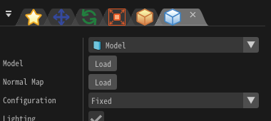

渲染 - 模型¶
概述¶
这里我们解释在渲染设置窗口中选择了“模型”时，影响渲染的参数。
在选择了“模型”时，可以导入并显示一个外部的3D模型。
在基础渲染设置窗口设置的颜色/扭曲图案可用于模型的纹理。如果不启用深度写入和深度测试，一些模型可能显示不正确。

参数¶

“渲染设置”窗口
模型¶
有三种类型的模型：文件、程序化模型和外部模型。
如果从文件加载模型，需设置FBX（.fbx）、水杉（.mqo）、gltf（.gltf/.glb）、obj（.obj）、geo（.geo/.bgeo）或Effekseer的模型文件（.efkmodel）。如果设置了.efkmodel以外的文件，将在与设置文件的同一目录下生成.efkmodel。如果你想在其他应用程序中播放特效，这个生成的文件是必需的。
也可以加载带有动画的FBX（.fbx）。会播放在FBX文件中设置的第一个动画。
如果你想使用程序化模型，请在程序化模型面板中创建一个模型并设置它。
工具中使用外部模型时，参照在行为中登记的模型。 实际运行时需要在播放特效时提供外部模型，并在渲染侧指定外部模型的索引。
放置方法¶
设置如何绘制粒子的模型。
| 放置方法 | 说明 |
|---|---|
| 告示牌 | 模型总是面向摄像机 |
| Z轴旋转告示牌 | 模型面向摄像机，但是Z轴被锁定了 |
| 移动方向告示牌 | 模型朝向摄像机，同时+Y方向朝向移动方向 |
| 固定Y轴 | 模型面向摄像机，但是Y轴被锁定了 |
| 固定 | 模型将会与粒子的旋转设置一致 |
剔除¶
设置模型的哪个/哪些面会被显示。
整体颜色¶
设置整个模型的色调。